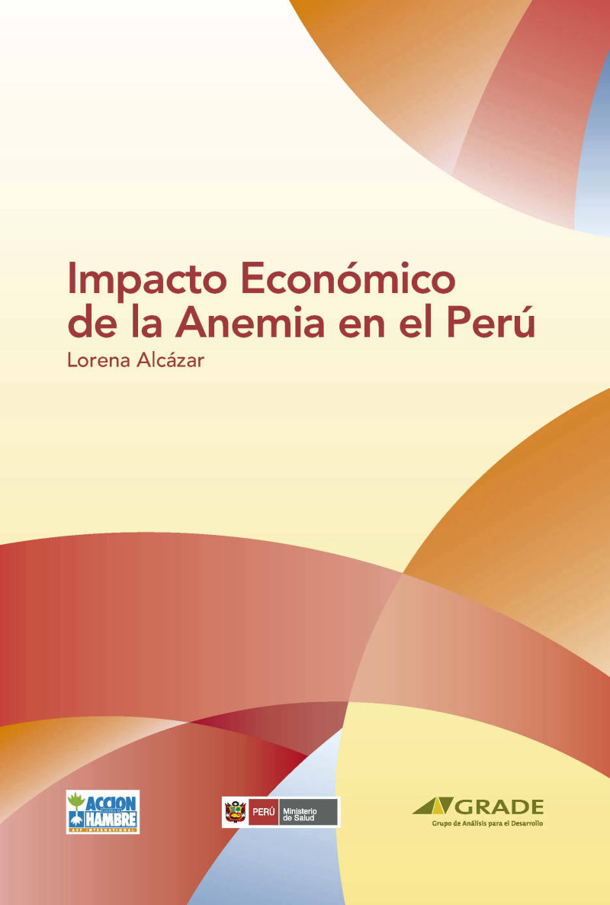

La anemia en el Perú, ¿qué hacer?
Impacto económico de la Anemia en el Perú
 Escribir subtítulo aquí
Escribir subtítulo aquí Escribir subtítulo aquí
Escribir subtítulo aquí Escribir subtítulo aquí
Escribir subtítulo aquí Escribir subtítulo aquí
Escribir subtítulo aquí Escribir subtítulo aquíEscribir subtítulo aquíEscribir subtítulo aquíEscribir subtítulo aquíEscribir subtítulo aquíEscribir subtítulo aquí
Escribir subtítulo aquíEscribir subtítulo aquíEscribir subtítulo aquíEscribir subtítulo aquíEscribir subtítulo aquíEscribir subtítulo aquíZavaleta, N. y Astete, L. (2017). Efecto de la anemia en el desarrollo infantil: consecuencias a largo plazo.
Mobirise helps you cut down development time by providing you with a flexible website editor with a drag and drop interface. Mobirise Website Builder creates responsive, retina and mobile friendly websites in a few clicks. Mobirise is one of the easiest website development tools available today. It also gives you the freedom to develop as many websites as you like given the fact that it is a desktop app.
Atención integral para la prevención de Anemia en los Wawa Wasi
Este informe presenta un proyecto bien elaborado que dio resultados positivos y que nos ayuda a identificar de mejor manera una prevención y un tratamiento acertado para la anemia ; la nutricionista María Marull partícipe activa del proyecto explica que además de brindar suplementos de hierro es necesario establecer una dieta diversificada; uno de los puntos clave para reducir de manera abismal la prevalencia en esta zona fue la suplementación masiva de sales de hierro, además la tarea planteada para la sostenibilidad a esta estrategia fue fortalecer las practicas alimenticias en el hogar a través de sesiones educativas trimestrales con las familias a fin de sensibilizar sobre la problemática de la anemia, es decir, hacían participes a toda la comunidad y la mantenían informada del desarrollo del programa.
Por otro lado, se desarrollaron sesiones educativas en las cuales se trabajó demostraciones y degustaciones de preparaciones ricas en hierro; el programa promovía las prácticas alimenticias de consumo de fuentes de hierro en el hogar. El proyecto realizado por la nutricionista en conjunto con su equipo deja una enseñanza que podría servir en el futuro para nuevos proyectos y programas para combatir con la anemia; no solo basta con un simple tratamiento de hierro para frenar la prevalencia de la anemia, si en verdad se quiere reducir los índices de la prevalencia de anemia se debe de incluir a la comunidad en el tratamiento, hacer que estos se sientan partícipes y que se sientan informados de lo que se les está aplicando y capacitarles con nutricionistas quienes podrán dar charlas sobre menús balanceados, nutritivos, económicos y ricos en hierro.
Efecto de la anemia en el desarrollo infantil consecuencias a largo plazo
Mobirise helps you cut down development time by providing you with a flexible website editor with a drag and drop interface. Mobirise Website Builder creates responsive, retina and mobile friendly websites in a few clicks. Mobirise is one of the easiest website development tools available today. It also gives you the freedom to develop as many websites as you like given the fact that it is a desktop app.